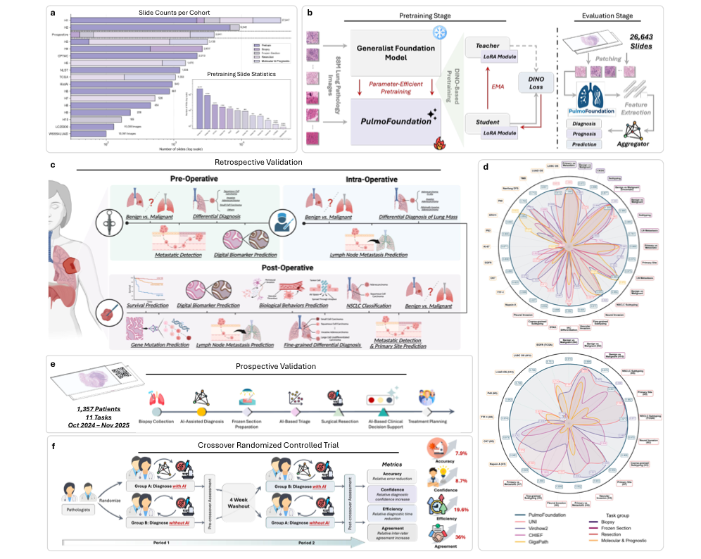

PulmoFoundation
A Clinically Validated Foundation Model for Comprehensive Lung Pathology Interpretation
肺病理Virchow2 适配前瞻性验证RCT 读片实验
Hugging Face gated 模型
| 基础信息 | 面向肺癌诊断、治疗选择与预后评估的综合肺病理基础模型。 |
|---|---|
| 数据集 | 基于约 40,000 张诊断 H&E WSI 做专科继续预训练；下游系统评估约 26,000 张 WSI，覆盖 32 个临床相关任务。 |
| 方法学 | 以 Virchow2 ViT-H/14 为底座，冻结原始权重并在每个 transformer block 的 query/value projection 中插入 LoRA；用 39,503 张肺 H&E WSI、约 8,800 万 foreground patches 进行 DINO teacher-student 继续自监督预训练。下游阶段冻结 PulmoFoundation encoder，按扫描倍率自适应切 patch，提取 2,560 维 patch 特征，经 ABMIL 聚合成 slide-level 表征，再训练任务头完成诊断、分子/IHC、预后和临床分诊。 |
| 开源 | 模型以 gated 方式发布在 Hugging Face，需申请访问；未见完整训练代码公开。 |

PulmoFoundation 详细算法示意LoRA-DINO pretraining + ABMIL downstream
1. Base Model
Virchow2泛癌种病理基础模型，预训练于 3.1M H&E WSI。
ViT-H/14632M 参数，32 层 transformer，hidden dim 1,280，16 heads。
224×224 输入每个输入 patch 被划分为 14×14 token，输出 [CLS] 与 patch token。
2. Lung-Specific Continual SSL
LoRA 注入原 Virchow2 权重冻结；在每层 attention 的 Q/V projection 加低秩矩阵。
参数高效rank=8，α=16；约 2M 可训练参数，仅占 Virchow2 约 0.3%。
DINO teacher-student不同增强视图分别进入 teacher/student；teacher 由 student EMA 更新。
3. Magnification-Aware Patching
20× WSI前景组织切为 256×256 non-overlapping patches。
40× WSI切为 512×512 patches，保持近似相同组织视野。
80× WSI切为 1024×1024 patches；统一 resize 到 224×224 输入 encoder。
4. Frozen Encoder + ABMIL
2,560-d patch feature拼接 final layer [CLS] 1,280-d 与 mean-pooled patch-token 1,280-d。
Attention MIL每张 WSI 是 patch bag；ABMIL 为 patch 分配权重并加权求和为 slide 表征。
5. Task Heads + Clinical Thresholds
Binary taskssigmoid + BCE：良恶性、转移/原发、IHC 阳性等。
Multi-class taskssoftmax + CE：NSCLC 亚型、细粒度鉴别诊断等。
Survival tasks离散时间 survival negative log-likelihood。
TriagePPV/NPV 安全阈值转化为二次复核减负、IHC defer 和冰冻分诊。
ABMIL attention：对每个 patch feature hi 学习注意力权重。
ai = softmax(wT tanh(Vhi))Slide representation：把高权重 patch 聚合成 WSI 表征。
z = Σ aihi
88M foreground patchesLoRA Q/V modulesDINO EMA teacherABMIL hidden=512
方法要点：PulmoFoundation 的“专科化”发生在两个层级：第一层是在 Virchow2 上用 LoRA-DINO 做肺病理继续自监督预训练，尽量保留泛癌种知识同时注入肺部形态；第二层是在下游任务中冻结 encoder，只训练 ABMIL aggregator 和轻量任务头，使所有任务共享同一肺专科 patch 表征，并用 PPV/NPV 阈值把模型分数转成临床可执行动作。
数据集细节
- 预训练强调肺部 H&E 诊断切片，约 4 万 WSI，用于把 Virchow2 的泛病理能力迁移到肺亚专科。
- 系统评估约 2.6 万 WSI，按术前活检、术中冰冻、术后切除和分子/预后任务组织。
- 前瞻性研究含 1,357 名患者，模拟真实临床连续入组和固定阈值使用。
方法学细节
- Virchow2 为 ViT-H/14，632M 参数；PulmoFoundation 不全量微调，而是在 Q/V projection 加 LoRA，rank=8、α=16，约 2M 可训练参数。
- 继续预训练采用 DINO self-distillation：student 匹配 teacher 输出分布，teacher 由 student 权重 EMA 更新；只使用 foreground tissue patches。
- 下游阶段 encoder 冻结；每个 patch 特征为 [CLS] 1,280-d + token mean 1,280-d，拼接成 2,560-d，再由 ABMIL 聚合。
- 任务头按任务类型选择 BCE、cross-entropy 或 discrete-time survival NLL；训练时只更新 ABMIL aggregator 和 prediction layer。
验证结果细节
- 前瞻性队列包含 1,357 名连续患者：250 例活检、271 例冰冻、836 例术后切除；所有预测在最终病理诊断前盲法生成，未重新训练或调参。
- 11 个前瞻性任务包括：活检良恶性、冰冻良恶性、术后 NSCLC 分类、粗粒度鉴别诊断、细粒度六分类、原发灶预测淋巴结转移，以及 TTF-1、Napsin-A、CK-7、P40、P63 五个 IHC 标志物预测。
- 平均 AUC 为 0.923；关键任务包括活检良恶性 AUC 0.992、冰冻良恶性 AUC 0.970、NSCLC 分类 AUC 0.993、粗粒度亚型 AUC 0.883、细粒度亚型 AUC 0.868、淋巴结转移 AUC 0.849。
- IHC panel 平均 AUC 为 0.920：TTF-1 0.892、Napsin-A 0.922、CK-7 0.921、P40 0.921、P63 0.944。
- 预设 PPV 安全阈值下，可减少 68.8% 活检二次复核、83.0% 冰冻二次复核，并延后 44.5% IHC 染色申请；交叉 RCT 中 AI 辅助准确率 83.8% → 91.7%，诊断时间减少 19.6%，一致性 κ 0.56 → 0.76。
PulmoFoundation 论文概括总结
这项工作提出的核心问题是：泛癌种病理基础模型虽然具备强迁移能力，但在肺癌围手术期全流程中，仍缺少足够的肺亚专科深度和真实临床验证。作者以 Virchow2 为底座，通过肺病理继续自监督预训练构建 PulmoFoundation，并把模型系统评估到活检、冰冻、手术切除、分子/IHC 标志物、预后预测和病理医生-AI 协作等场景。
研究定位从“任务特异模型”转向“肺病理专科基础模型”，目标是覆盖一个器官系统内的连续诊疗链，而不是只解决单个分类任务。
技术贡献采用 LoRA-DINO 方式对 Virchow2 做参数高效继续预训练，再用 frozen encoder + ABMIL 统一支持多类 slide-level / case-level 任务。
验证体系回顾性部分覆盖 32 个临床任务，并与 UNI、Virchow2、CHIEF、GigaPath 等泛癌种模型比较；前瞻性部分在 1,357 名连续患者中固定阈值验证。
临床意义模型不只报告 AUC，还评估二次复核减负、IHC 染色延后、冰冻分诊和 reader study 中医生准确率、效率、信心与一致性的改善。